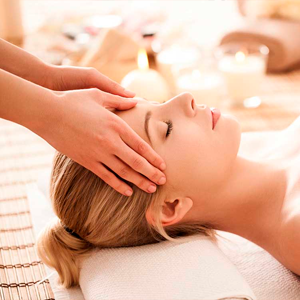

• BELLEZA •
La Belleza no puede tratarse en forma separada de los otros dos conceptos ya que existe una interdependencia muy fuerte con la Salud y el Bienestar.
Nuestra amplia variedad de tratamientos son personalizados y estan enfocados en el cuidado de la salud y belleza personal, nuestros profesionales se encuentran en constante formación y son los indicados para brindarte la atención que mereces.

Peluqueria
Tenemos técnica en variedad de colores y logramos interpretar perfectamente ese cambio que estas buscando o simplemente refrescar sutilmente tu imagen y encontrar lo justo que tenga que ver con tu personalidad y estilo de vida. Contamos con un amplio staff de grandes estilistas, cada uno con años de experiencia.

Extensión de Pestañas
Las extensiones de las pestañas se caracterizan por intensificar la mirada y lograr captar la atención.
Lo importante es que no se trata de pestañas postizas sino de extensiones sobre las mismas pestañas, por ello mantienen un aspecto natural y lucen como si fueran parte de uno mismo.
Tinte de cejas
A diferencia de la depilación con pinza, o la depilación con hilo, el tinte para las cejas es un servicio que no elimina el cabello (aunque puede hacerlo junto con la depilación), se utiliza un tinte a base vegetal semipermanente para mejorar el tono, la forma y el espesor de tus cejas. Los beneficios son inmediatos.

Depilación y Perfilado de Cejas
Las cejas son un elemento muy importante en nuestra imagen. Unas cejas bonitas pueden transformar la expresión y rejuvenecer tu mirada.
Las modas van cambiando y suelen influir en el grosor o estilo de tus cejas. Nosotros te podemos orientar de forma completamente personalizada sobre el diseño que te favorece según tus facciones.

Spa
Combinamos las técnicas manuales con la utilización de sustancias naturales de regiones de Catamarca: Valle Central, Ambato, Puna, Aguas Termales de Fiambala, Piedras de Antofagasta de la Sierra. Los elementos de nuestra tierra brindan a nuestros huéspedes y clientes un relax y atención única.
| Forma de pago |
Cuotas sin interes |
Promoción |
| Tarjeta de credito |
Hasta 6 cuotas sin interés |
Sin descuento |
| Tarjeta de debito |
Un solo pago |
10% de descuento |
| Contado/Efectivo |
Un solo pago |
25% de descuento |